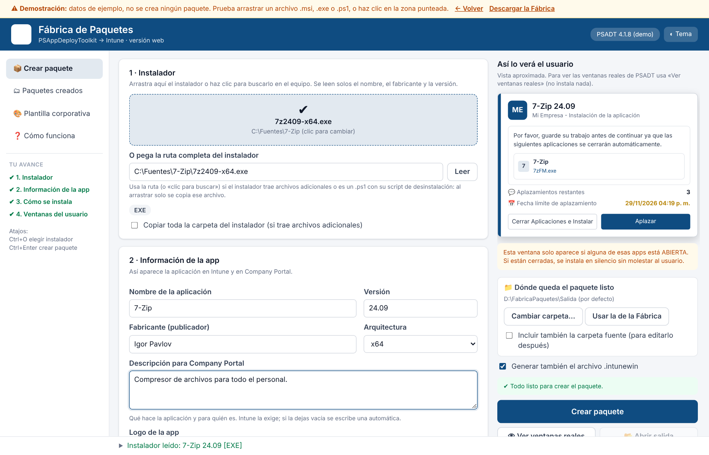

Paquetes de PSADT para Intune,
sin escribir código
Arrastra un instalador MSI, EXE o un script PS1. La Fábrica arma el paquete de PSAppDeployToolkit 4.x, el .intunewin, la detección y la ficha con todo lo que hay que configurar en Intune.

Cómo se usa
Tres pasos. No hay que instalar nada.
Descarga
Baja el ZIP y descomprímelo, por ejemplo en D:\FabricaPaquetes.
Abre
Doble clic en Crear-Paquete-Web.cmd (en el navegador) o Crear-Paquete.cmd (ventana de escritorio).
Crea
Arrastra el instalador, revisa los datos, mira la vista previa y pulsa Crear paquete.
Lo que hace por ti
Basada en las funciones oficiales de PSAppDeployToolkit 4.1 / 4.2.
Lee el instalador
Nombre, versión, fabricante y código de producto del MSI; versión e ícono del EXE; script de desinstalación del PS1.
Ventanas para el usuario
Apps que se deben cerrar, aplazamientos, fecha límite, cuenta regresiva y textos propios, con vista previa en vivo.
Plantilla corporativa
Nombre de la empresa, color, logo, banner, idioma y ruta de logs para todos los paquetes.
Validación y historial
Marca en rojo lo que falta antes de crear, y guarda la lista de paquetes creados.
Qué genera
En la carpeta de salida de cada paquete:
| Archivo | Para qué |
|---|---|
<Paquete>.intunewin | Se sube a Intune como aplicación Win32. |
FichaIntune.txt | Comandos de instalación y desinstalación, códigos de retorno, detección, requisitos y pruebas. |
Deteccion.ps1 | Regla de detección: código de producto (MSI), nombre y versión (EXE) o marca de registro (PS1). |
Descripcion.txt | Descripción para Company Portal. |
Logo_Intune.png | Ícono de la app (512 px). |
Requisitos
Equipo
- Windows 10 u 11 con Windows PowerShell 5.1.
- No necesita permisos de administrador para crear paquetes.
- La versión web abre Edge; si no está, el navegador por defecto.
Incluido
IntuneWinAppUtil.exeoficial de Microsoft, con su licencia.- El módulo PSAppDeployToolkit se busca en
Herramientas, en el equipo o en la PowerShell Gallery.
Seguridad
- La versión web solo escucha en
127.0.0.1, con un código nuevo cada vez que se abre. - Prueba cada paquete como SYSTEM antes de publicarlo (la ficha trae los pasos).